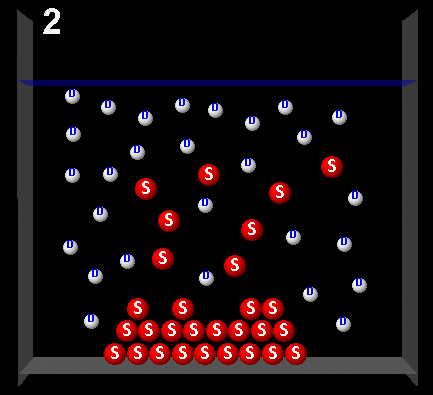

Disolución 3


La siguiente figura representa un soluto (rojo) disuelto en un disolvente (blanco).
Pulsando sobre las siguientes figuras se pueden observar animaciones que representan cuatro posibles procesos dinamicos de este sistema.
|  |
Después de observar las animaciones elige aquella que representa una disolución saturada.
Incorrecta. En esta animación hay más moléculas de soluto que pasan
de la disolución al sólido (cristalización) que a la inversa. La disolución estaba sobresaturada.
|
|
Incorrecta. En esta animación hay mas moléculas de soluto que pasan del
sólido a la disolución que a la inversa. La disolución no estaba saturada.
|
|
Correcto. En esta animación se observa que en el intercambio de
moléculas de soluto entre el sólido y la disolución, la cantidad de soluto en disolución permanece
constante. La disolución estaba saturada.
|
|
Incorrecta. En esta animación no existe intercambio de
moléculas de soluto entre el sólido y la disolución. Esta situación no es real.
|